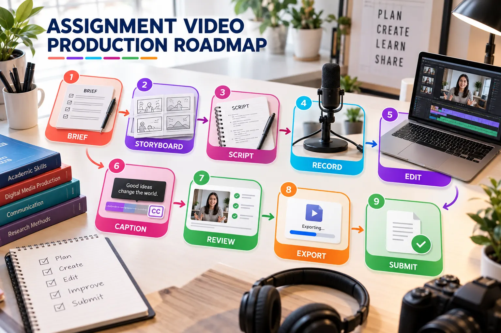
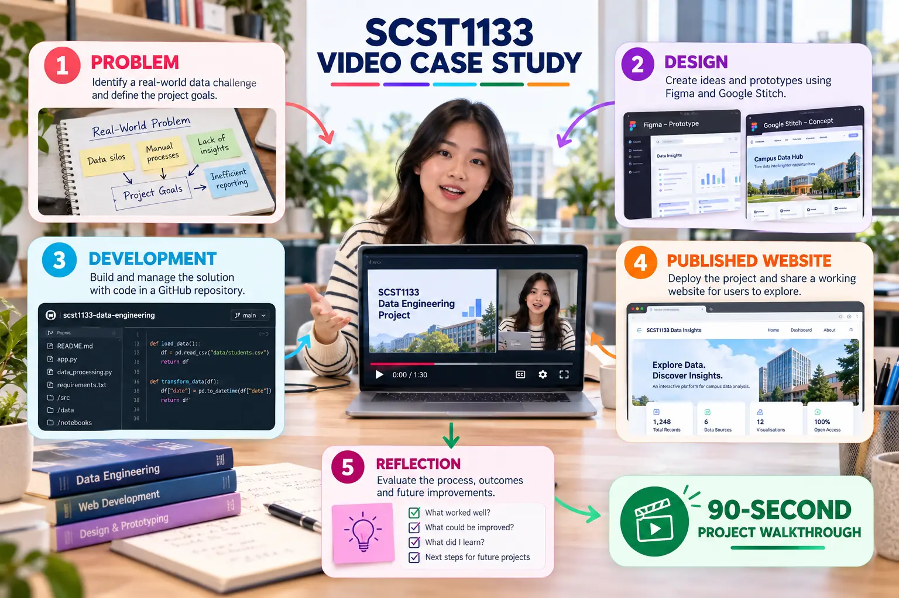

SCST1133 Assignment Video Production
Produce a 60–90 second project walkthrough that demonstrates process, working evidence and individual reflection.


Assignment brief
Create a 60–90 second digital project walkthrough that explains the problem, demonstrates the workflow, presents authentic project evidence and concludes with a personal reflection.
| Required section | Evidence to show |
|---|---|
| Problem or user need | Clear context and project objective |
| Design process | Figma or Google Stitch evidence |
| Development process | GitHub repository, README or commit evidence |
| Working outcome | Published website or interactive prototype |
| Reflection | One lesson, limitation and next improvement |
Assessment rubric
| Criterion | Weight | High-quality evidence |
|---|---|---|
| Content accuracy and relevance | 25% | Concise, correct explanation linked to the brief |
| Project evidence and demonstration | 25% | Actual tools, decisions and working result |
| Structure and storytelling | 15% | Purposeful sequence with clear transitions |
| Visual and audio quality | 15% | Readable visuals and clear narration |
| Accessibility | 10% | Reviewed captions and inclusive presentation |
| Responsible use and attribution | 5% | Sources and substantial AI assistance disclosed |
| Sharing and technical compliance | 5% | Verified link, correct duration and backup |
Common weaknesses to avoid
- Reading slides without demonstrating the project.
- Showing generic AI visuals instead of actual evidence.
- Using text that is too small for normal playback.
- Allowing music to cover the narration.
- Submitting a restricted or untested link.
- Claiming results, users or testing that did not occur.
- Exceeding the duration because the script was not rehearsed.
Final evidence package
- A complete 60–90 second video.
- A tested Viewer link.
- A reviewed caption track or transcript.
- An MP4 backup.
- A README containing the video link and AI disclosure.